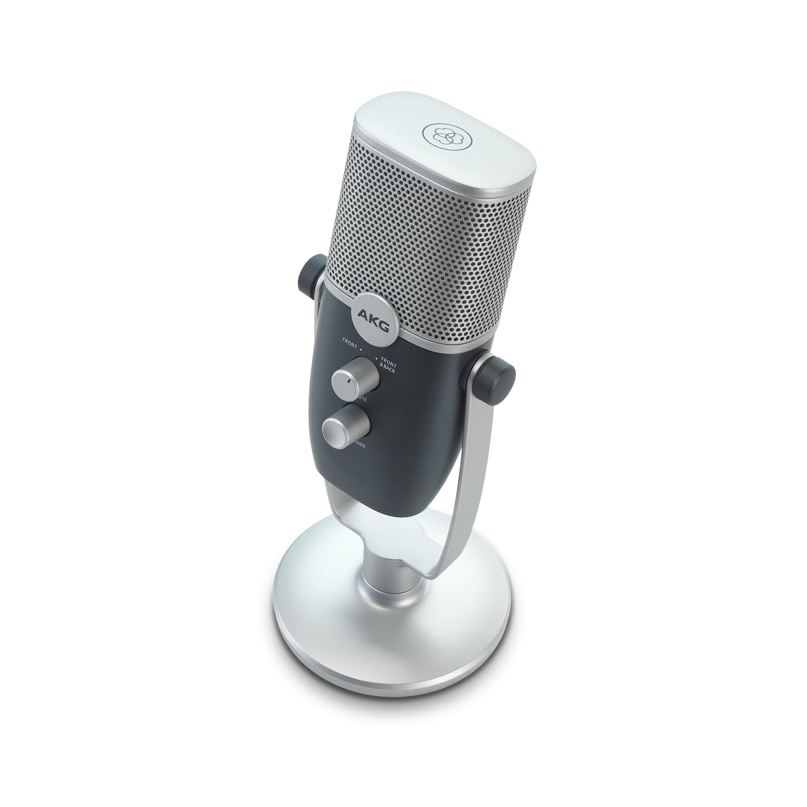

مكونات الحاسوب المادية
هي عباره عن الأجهزة الداخلية في جهاز الحاسوب، والأجهزة التي يُمكن إيصالها بجهاز الحاسوب، وتتكوّن من عدّة أنواع، وسنتعرف عليها من خلال اختيارك للمكونات
اختر مكونًا
وحدات الادخال
تقوم هذه الوحدات بإدخال أو إيصال البيانات أو المعلومات المطلوب معالجتها إلى وحدة المعالجة بالحاسب. ومن هذه الوحدات:
1. لوحة المفاتيح
هي جهاز إدخال رئيسي في الحاسوب يحتوي على مجموعة من الأزرار المرقمة والرموز والأحرف. تستخدم لإدخال البيانات والتحكم في الحاسوب من خلال الضغط على الأزرار المختلفة. تحتوي لوحة المفاتيح على مفاتيح مختلفة للحروف الأبجدية والأرقام والرموز الخاصة بالإضافة إلى مفاتيح لوظائف متعددة. تعتبر لوحة المفاتيح أحد أساسيات التفاعل مع الحاسوب وتسهل عملية الكتابة والتحكم في البرامج.
2.الفارة

الفأرة هي جهاز إدخال يستخدم في التفاعل مع أجهزة الكمبيوتر من خلال تحريكها على سطح مستوٍ والنقر على الأزرار الموجودة عليها. للماوس مفتاحان، أيمن وأيسر، وقد يوجد مفتاح في الوسط في بعض الأنواع. عند تحريك الماوس، يتحرك مؤشر الماوس على الشاشة في جميع الاتجاهات وبشكل سهم.
للفأرة أربعة استخدامات رئيسية:
- الإشارة (Pointing) : يمكنك الإشارة إلى أي شيء موجود على الشاشة.
- الاختيار (Selection): يتم ذلك بالضغط على زر الماوس الأيسر أثناء الإشارة إلى شيء معين على الشاشة.
- النقل (Move): من خلال الضغط المستمر على الزر الأيسر للماوس وسحب الشيء الذي تريد نقله إلى المكان الجديد، وتسمى هذه العملية "سحب وإسقاط" (Drag and Drop).
- فتح القوائم المختصرة (Lists Open): يتم ذلك بالضغط على الزر الأيمن للماوس، وتختلف تلك القوائم باختلاف المكان الموجود فيه مؤشر الماوس.
3. الماسح الضوئي

الماسح الضوئي هو جهاز يستخدم لتحويل الصور أو النصوص المطبوعة إلى ملفات رقمية قابلة للتعديل على الكمبيوتر. ويعتبر الماسح الضوئي واحدة من وحدات الإدخال الهامة التي تساعد في تحويل الوثائق الورقية إلى صيغ قابلة للتعديل والتعامل معها بكل سهولة.
4. الكاميرا

هي جهاز يستخدم لالتقاط الصور الثابتة والفيديوهات. في الحاسوب، تُستخدم الكاميرا للتواصل عبر الفيديو، مثل مؤتمرات الفيديو والدردشة المرئية. يمكن أن تكون كاميرا الحاسوب مدمجة في الجهاز أو خارجية.
5. الميكرفون
هو جهاز يستخدم لإدخال الصوت إلى الحاسوب. يُستخدم الميكروفون لتسجيل الصوت، التواصل الصوتي في المكالمات والمؤتمرات، والتحكم الصوتي في بعض التطبيقات.
6. شاشة اللمس

هي جهاز إدخال وإخراج في آن واحد، يسمح للمستخدم بالتفاعل مع الحاسوب عن طريق لمس الشاشة مباشرة. تُستخدم شاشات اللمس في الهواتف الذكية، الأجهزة اللوحية، وبعض الحواسيب المحمولة.
7. قلم الرسم الإلكتروني

هو جهاز يستخدم لإدخال الرسومات والكتابة اليدوية إلى الحاسوب. يُستخدم القلم على شاشات خاصة تدعم اللمس بالقلم، ويتيح دقة عالية في الرسومات والكتابة، مما يجعله مفيدًا للفنانين والمصممين.
وحدات الإخراج
تقوم هذه الوحدات بالسماح للبيانات بالظهور من خلالها حسب طريقة الظهور التي صممت لأجلها. ومن هذه الوحدات:
1.الشاشة

هي جهاز يعرض البيانات النصية والرسومية التي يعالجها الحاسوب. تستخدم الشاشة لتقديم واجهة مرئية للمستخدم، مما يسمح له بالتفاعل مع التطبيقات والبرامج ورؤية النتائج بشكل واضح.
2.الطابعة

هي جهاز يحول البيانات الرقمية إلى نسخ ورقية. تُستخدم لطباعة المستندات والصور والتقارير من الحاسوب إلى الورق. تأتي الطابعات بأنواع متعددة مثل الطابعات النفاثة والحبرية والليزرية.
3.السماعات

هي جهاز يُستخدم لإخراج الصوت من الحاسوب. تُستخدم السماعات للاستماع إلى الموسيقى، الفيديوهات، الألعاب، والمكالمات الصوتية. يمكن أن تكون السماعات جزءًا من الحاسوب نفسه أو منفصلة.
وحدات إدخال وإخراج ثنائية العمل
وهي أجهزة تملك إمكانية العمل على شكل وحدات إدخال وإخراج بيانات بنفس الوقت. ومن هذه الوحدات:
1.شاشة اللمس

تُعتبر جهاز إدخال وإخراج في آن واحد، حيث يمكن للمستخدم التفاعل مع التطبيقات والنظام عن طريق لمس الشاشة، وفي الوقت نفسه، تعرض الشاشة البيانات والمعلومات.
2.محركات الأقراص الصلبة الخارجية

تُستخدم لتخزين البيانات (إدخال) واسترجاعها (إخراج). تُستخدم لنقل وتبادل البيانات بين الأجهزة.
3. أجهزة USB

أجهزة USB (مثل الفلاش ميموري): تُستخدم لتخزين ونقل البيانات بين الأجهزة. يمكن إدخال البيانات إلى الفلاش ميموري من جهاز واحد وإخراجها إلى جهاز آخر.
وحدات النظام
هي الصندوق المعدني الذي يحوي تقريباً جميع مكونات الحاسب الأساسية ويحميها من سقوط الأشياء الثقيلة عليها فتعمل على تعطيله أو إحداث أي نوع من الخلل فيه. كذلك تعتبر وحدة النظام المأوى والمكان الآمن لكثير من اجزاء الحاسب الرئيسية مثل السواقات واللوحة الأم التي تركب عليها البطاقات والمودم والذاكرة العشوائية وغيرها من الاجزاء المهمة لعمل الحاسوب.

1.اللّوحة الأم (Mother Board)

هي لوحة الكترونية وتوجد داخل أجهزة الكمبيوتر ومهمتها بالأساس هي توصيل وتوزيع الطاقة الكهرباء ونقل الأوامر إلى باقي قطع الهاردوير، وتتكون من العديد القطع والدوائر الكهربائية المختلفة والمعقدة ويتم تجميع وعمل اغلب القطع الصلبة الهارد وير من خلالها لتتناغم كل هذه القطع مع بعضها لتقدم لك أداء جيدا بدقة متناهية أثناء عمل الحاسوب.
تتكون اللوحة الأم من عدة قطع رئيسية:
-
شرائح التحكم (CHIPSETS):
عبارة عن شريحتين على شكل مربع، والمعروفة أيضًا باسم الجسر الشمالي والجسر الجنوبي.

-
شريحة البايوس (BIOS):
مهمتها هي تخزين المهام والمعلومات اللازمة لعمل الكمبيوتر، وتحتوي على شريحة CMOS لحفظ نظام التشغيل.

-
النواقل Buses:هي عبارة عن أسلاك نحاسية مطبوعة على اللوحة الأم وظيفتها نقل البيانات والتيار الكهربائي، يتَّصف الناقل بعرض يقاس بالبت Bit وسرعة تقاس بالميغاهيرتز MHz. والنواقل التي تراها أعلى وأسفل اللوحة هي للطبقة الأولى والأخيرة من اللوحة.

-
كروت الصوت الداخلية:
فتحات لتوصيل المايك والسماعات.

-
فتحات التوسعة:
وهي شقوق توجد في الجزء السفلي من اللوحة الأم وعملها الرئيسي هو توصيل الكروت الثانوية والأساسية بالجهاز الحاسوب.

-
منافذ التغذية:
.تستخدم هذه المنافذ لتزويد اللوحة الأم بالطاقة اللازمة لعملها وهي ثلاثة أنواع: المنفذ ATX: هو المنفذ الأساسي لتغذية اللوحة الأم بالطاقة عبر الكابل الآتي من وحدة التغذية Power Suplay وإمَّا أن يكون عدد الثقوب 20 أو 24 بحسب كمية الطاقة التي تحتاجها اللوحة. المنفذ ATX 12 volt: يقع هذا المنفذ بجوار المعالج ويمدُّه بالتغذية ويتألف من أربعة ثقوب. منافذ التغذية الإضافية: تتطلب اللوحات الأم ذات الأداء الكبير أو التي تحوي على الكثير من شقوق التوسعة طاقة أكبر لذا أضيفت منافذ إضافية لهذا الغرض ومنها المنفذ EPS 12 volt الذي يزود اللوحة الأم التي تحوي أكثر من معالج بالطاقة.
![<EPS>تستخدم هذه المنافذ لتزويد اللوحة الأم بالطاقة اللازمة لعملها وهي ثلاثة أنواع:
المنفذ ATX: هو المنفذ الأساسي لتغذية اللوحة الأم بالطاقة عبر الكابل الآتي من وحدة التغذية Power Suplay وإمَّا أن يكون عدد الثقوب 20 أو 24 بحسب كمية الطاقة التي تحتاجها اللوحة.
المنفذ ATX 12 volt: يقع هذا المنفذ بجوار المعالج ويمدُّه بالتغذية ويتألف من أربعة ثقوب.
منافذ التغذية الإضافية: تتطلب اللوحات الأم ذات الأداء الكبير أو التي تحوي على الكثير من شقوق التوسعة طاقة أكبر لذا أضيفت منافذ إضافية لهذا الغرض ومنها المنفذ EPS 12 volt الذي يزود اللوحة الأم التي تحوي أكثر من معالج بالطاقة.</EPS>](EPS.jpg)
-
مداخل SATA:
لتوصيل وحدة الذاكرة الرئيسية (الهاردديسك).

-
وحدة التبريد:
مثبتة على سطح اللوحة الأم لتبريدها.

-
مدخل توصيل الإنترنت:
لتوصيل الكابل المخصص للإنترنت.

-
مدخل USB:
لاستخدام أدوات الإدخال المختلفة.

-
مدخل كبل توصيل الشاشة (VGA / HDMI):
لتوصيل الكمبيوتر بشاشات العرض.

-
مقبس المعالج CPU Socket:
يُؤمِّن هذا المقبس اتصالًا فيزيائيًا وإلكترونيًا بين اللوحة الأم والمعالج، ولكلّ معالج مقبس مخصَّص له ويمكن أن يتشارك معالجان أو أكثر مقبسًا واحدًا، وستلاحظ أنَّ بعض المقابس تحوي إبرًا والأخرى تحوي ثقوبًا إذ الفرق بينهما أنَّ الأولى مخصَّصة لمعالجات من نوع LGA (Land Grid Array) والثانية مخصَّصة لمعالجات من نوع PGA (Pin Grid Array).

وحدات المعالجة المركزية

هي المكون الرئيسي المسؤول عن معالجة التعليمات وتنفيذ المهام في الحاسوب. يمكن اعتبارها بمثابة "عقل" الحاسوب، حيث تعالج البيانات وتنفذ البرمجيات.
الملامح الرئيسية لوحدة المعالجة المركزية

الوحدة الحسابية والمنطقية (ALU)
الوحدة الحسابية والمنطقية (ALU) هي جزء من وحدة المعالجة المركزية (CPU) في الكمبيوتر، وتقوم بأداء عمليات حسابية مثل الجمع والطرح والضرب، بالإضافة إلى العمليات المنطقية مثل AND وOR وNOT. تعتبر ALU عنصرًا أساسيًا في معالجة البيانات، حيث تتلقى البيانات من الذاكرة أو وحدات الإدخال، وتجري العمليات المطلوبة، ثم تعيد النتائج مرة أخرى.
وحدة التحكم (CU)
هي جزء من وحدة المعالجة المركزية (CPU) مسؤولة عن تنظيم وتوجيه العمليات داخل الكمبيوتر. تقوم بتحليل التعليمات الواردة من الذاكرة، وتوجيه إشارات التحكم إلى مكونات النظام لتنسيق تنفيذ التعليمات. تعمل على ضمان تزامن وتنسيق جميع العمليات لضمان فعالية الأداء.
السجلات (Registers)
هي وحدات تخزين صغيرة وسريعة داخل وحدة المعالجة المركزية (CPU) تستخدم لتخزين البيانات والتعليمات مؤقتًا أثناء معالجة المعلومات. تتميز السجلات بسرعة الوصول العالية مقارنة بالذاكرة الرئيسية، حيث يُستخدم كل سجل لأغراض محددة مثل تخزين العناوين، القيم الوسيطة، أو النتائج النهائية. تعتبر السجلات عنصرًا مهمًا في تحسين أداء المعالجة وزيادة كفاءة النظام.النواة (Core)
هي وحدة معالجة فردية داخل المعالج (CPU). تعد النواة الجزء الذي ينفذ تعليمات البرامج ويقوم بالعمليات الحسابية والمنطقية. يمكن أن يحتوي المعالج على نواة واحدة أو عدة نوى، مثل ثنائية النواة، رباعية النواة، إلخ، مما يمكنه من تنفيذ مهام متعددة في نفس الوقت بشكل أكثر كفاءة.
وحدات التخزين
وحدات التخزين في الحاسوب
تشمل وحدات التخزين في الحاسوب نوعين رئيسيين من أجهزة التخزين: القرص الصلب (HDD) وقرص الحالة الصلبة (SSD). بالإضافة إلى ذلك، يوجد نوع آخر من التخزين وهو أقراص التخزين الضوئي:
أقراص التخزين الضوئي
-
CD (قرص مضغوط):

- يُستخدم لتخزين البيانات، الموسيقى، والبرامج.
- سعة التخزين تصل إلى حوالي 700 ميجابايت.
-
DVD (قرص فيديو رقمي):

- يُستخدم بشكل أساسي للأفلام وبرامج التشغيل.
- سعة التخزين تصل إلى 4.7 جيجابايت (لنسخة واحدة الطبقة) و8.5 جيجابايت (لنسخة مزدوجة الطبقة).
-
Blu-ray:

- يُستخدم بشكل أساسي لتخزين الأفلام عالية الدقة.
- سعة التخزين تصل إلى 25 جيجابايت (لنسخة واحدة الطبقة) و50 جيجابايت (لنسخة مزدوجة الطبقة).
استخدامات الاسطوانات في الحاسوب
- تخزين البيانات: تُستخدم لتخزين الملفات، الصور، المستندات، وغيرها.
- الوسائط المتعددة: تُعتبر وسيلة شائعة لتوزيع الأفلام والموسيقى.
- برامج التثبيت: تُستخدم لتوزيع برامج الكمبيوتر، حيث تحتوي على برامج تثبيت النظام أو التطبيقات المختلفة.
- نسخ احتياطي: تُستخدم كوسيلة لتخزين النسخ الاحتياطية من البيانات الهامة.
وحدات الذاكرة
تستخدم وحدات الذاكرة لتخزين البيانات والمعلومات التي تعالجها وحدة المعالجة. تشمل:
ذاكرة الوصول العشوائي (RAM)

وهي الذاكرة التي تستخدم لتخزين البيانات المؤقتة أثناء تشغيل الحاسوب. كلما كان حجم الذاكرة أكبر، زادت قدرة النظام على تشغيل برامج متعددة في الوقت نفسه .
الذاكرة الدائمة (ROM)

تخزن تعليمات ومعلومات ثابتة يستخدمها الحاسوب عند التشغيل، وعادةً ما تحتوي على البرنامج الثابت (Firmware) الخاص بالجهاز.
التخزين المؤقت (Cache)

وهي أحد أنواع الذاكرة الموجودة في الحاسوب، وتمتاز بسرعتها الفائقة، ويمكن للمعالج الوصول إليها بسرعة أكبر من ذاكرة الوصول العشوائي العادية، ويتم اللجوء إليها لتخزين التطبيقات والبرامج الموجودة لمعالجتها، وذلك ليكون التعامل معها سريعًا وسلسًا، كما يوجد العديد من الأهداف لها، مثل: تخزين الأجزاء النشطة من البرامج والتطبيقات، وتسريع جهاز الحاسوب.